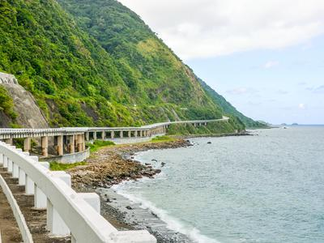

Ready to go on an adventure to Laoag and the nearby Ilocos Norte tourist spots? Check out our sample itinerary to make sure you get the best out of your trip to The Sunshine City.
Sample Itinerary
Day 1: Arrival + DIY Walking Tour
- 11:55 AM - Departure from NAIA Terminal 2 to Laoag Airport
- 01:05 PM - ETA in Laoag Airport
- 01:30 PM - Late lunch at La Preciosa
- 03:00 PM - Late check-in at Viven Hotel, rest and freshen up
- 04:00 PM - 06:00 PM - Take a DIY walking tour around the city
- 06:00 PM - Dinner near the hotel
- 08:00 PM - Call it a day. Start bright and early the next day
Day 2: City Tour + Culture + Food Trip
- 08:00 AM - Leisurely breakfast at the hotel
- 09:00 AM - 12:00 NN Start of Paoay Tour. Visit Paoay Church,
Malacañang of the North and Paoay Lake, which are often included
in a cultural tour in Ilocos Norte. - 12:00 NN - Lunch at Paoay
- 01:30 PM - 06:00 PM Continuation of cultural city tour. Visit Museo
Ilocos Norte and chill at the Rizal Amusement Park - 06:00 PM - Dinner at Saramsam Ylocano
- 08:00 PM - Back at the hotel. Call it a day. Start bright and early
the next day
Day 3: Sightseeing + Sandboarding
- 8:00 AM - Leisurely breakfast at the hotel
- 09:30 - 12:00 NN - Visit the Bangui Windmills, Patapat Viaduct, and
Kapurpurawan Rock Formation, which are often combined in an
Ilocos Norte tour - 01:00 PM - Late lunch in Laoag City
- 02:00 - 05:00 PM - La Paz Sand Dunes: Go on a 4x4 adventure,
try sandboarding - 06:00 PM - Dinner at Cuisine de Iloco
- 08:00 PM - Back at the hotel. Call it a day. Start bright and early
the next day
Day 4: Museum Tour + Vigan Excursion +
Departure
- 09:00 AM - Late breakfast at the hotel
- 12:00 NN - Hotel check out
- 12:30 PM - Lunch near the hotel
- 01:30 PM - 06:00 PM - Join a Vigan trip from Laoag. Visit Plaza
Burgos, Crisologo Museum, Calle Crisologo, Syquia Mansion, and
many more - 06:00 PM - 07:00 PM - Back to Laoag. Dinner. Do some shopping
for souvenirs - 07:30 PM - Travel to Laoag Airport
- 09:20 PM - Departure from Laoag Airport
- 11:30 PM - ETA in NAIA Terminal 2
Best Time To Go There
If you don’t want to sweat buckets during your trip, the best time to visit Laoag is during the cooler months of November to February. Christmas preparations are already in full swing by the time November comes around, so expect a lot of holiday activities during this time.
Dry and Summer Season | March to June
are the hottest months with temperatures reaching a high of 35 degrees Celsius, with minimal rainfall. These months also coincide with Holy Week and summer break for most schools, so you may see a lot of families with school-age children in Laoag during your visit
Rainy Season | July to October
The months of July to October bring rain, and sometimes typhoons. The city experiences an average of 4 to 5 typhoons every year, so make sure to check weather reports regularly, especially if you plan your trip around these months.
How to Get There?
Ilocos Norte, Philippines has an International Airport accepting tourists from various ports of origin: 45 minutes from Manila (daily), Philippines; 55 minutes from Kaohsiung, Taiwan ( Chartered flights); 80 Minutes from Guangzhou, Hongkong & Taipei; 2.15 hours from Shanghai.
By Land

By land, various bus lines serve the Manila-Laoag route for an 8-hour drive. Ilocos Norte is just 477 kilometers north of Manila. It can also be reached 4 hours from Baguio City.
Laoag is about 487km from Manila, and it takes an average of 10 hours to travel to the city. The land travel to Laoag may be longer than a flight from Manila but it’s cheaper. Here are some of your transport options.
Private Car From Manila
You can either bring a private car or hire a private van. The fastest way to drive to Laoag is via the North Luzon Expressway (NLEX), then take the exit to SCTEX/Clark Airport. From there, follow the signs for Tarlac/Baguio/TPLEX, continue onto the Tarlac-Pangasinan-La Union Expressway, and traverse the Mac Arthur Highway to get to the city. Total driving time from Manila to Laoag is about 8 hours.